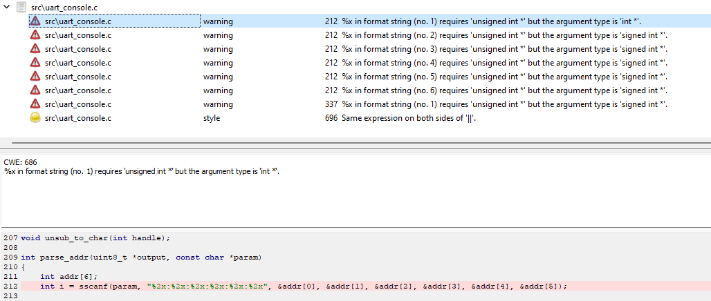
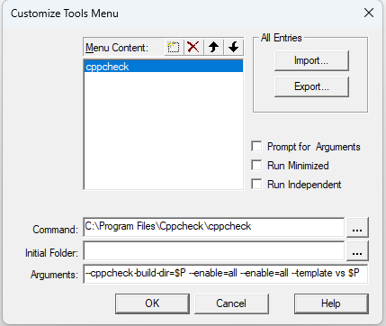

代码的静态分析是指在不运行代码的情况下，通过一些技术对代码进行扫描，检查代码是否符合一些规范、安全、可靠和可维护的标准。 静态分析可以帮助开发者提前发现和修复代码中的错误或潜在问题，提高产品质量和安全性。 静态分析除了依靠人力和编译器之外，也可以借助专门的工具。本文介绍几种适合用于嵌入式的静态分析工具。
GCC
使用 GCC 编译时指定 -fanalyzer
选项就可以启用静态分析功能，能够检查重复 free 等问题。
打开 SDK 里的 GCC 项目示例，在 Makefile 文件添加 CFLAGS=-fanalyzer，重新编译就能体验 GCC 的这个分析功能。
与后面的工具相比，它所能检测到的问题要少一些。
Cppcheck
Cppcheck 是一个开源的、用于C/C++代码的静态分析工具。它提供了独特的代码分析，可以检测出代码中的错误， 并专注于检测未定义行为和危险的编码结构。它的目标是只检测代码中真正的错误，并尽可能地减少误报（虚警）。 Cppcheck 可以检测内存泄漏、分配释放不匹配、缓冲区溢出等多种问题。
以 Windows 为例，下载并安装 Cppcheck。
直接分析
打开主界面，点选菜单“Analyze” –> “Directory …”， 选择要分析目录。稍等片刻即可得到分析结果。
以 SDK v8.2.5 为例，选择 UART GATT Console 所在目录，分析结果如下：

Cppcheck 报告了两个问题：
-
sscanf 参数类型有误
这里从字符串读取地址时，
%x对应于unsigned int *。程序里错误地提供了int *。应该将addr的定义改为unsigned int addr[6]。由于这里每个元素只存储一个字节，这个问题不影响功能。
-
参与
||运算的两个值相同此处的代码是想接收所有的断行方式（\r、\n、\n\r、\r\n），但是“一不小心”，第二个 \n 也写成了 \r，应该改正。
这个问题将影响只使用 \n 断行（Unix LF 格式）的字符串。
通过这个简单的测试，Cppcheck 帮助我们发现了 UART GATT Console 里的两个问题。Cppcheck 的其它功能，本文不再详述。
与 Keil 集成
可以在 Keil 里通过自定义工具的方式调用 Cppcheck：点选菜单“Tools” –> “Customize Tools Menu…”，将 Cppcheck 添加到工具菜单里：

打开项目，点击菜单“Tools” –> “Cppcheck”就会自动分析项目所在目录里的所有源代码。
上面的 Cppcheck 参数仅供参考，请参照 Cppcheck 文档根据需要设置。
PVS-Studio
PVS-Studio是一个静态分析器，用于检测 C，C++，C# 和 Java 代码中的错误和潜在漏洞。 它可以提高代码质量，安全性和可靠性。它支持多种编码标准和开发工具，并且有多个版本适用于不同的平台。
安装后，打开“C and C++ Compiler Monitoring UI”，点选菜单“Tools” –> “Analyze Your Files (C and C++)…”， 直接点击弹出的对话框里的“Start Monitoring”按钮，此时 PVS-Studio 在屏幕右下角显示一个监听窗口。 打开 Keil，重新编译所要检查的项目，点击监听窗口里的“Stop Monitoring”按钮，等待 PVS-Studio 分析刚才所编译的文件。